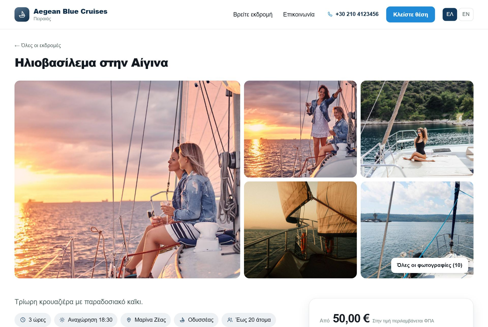
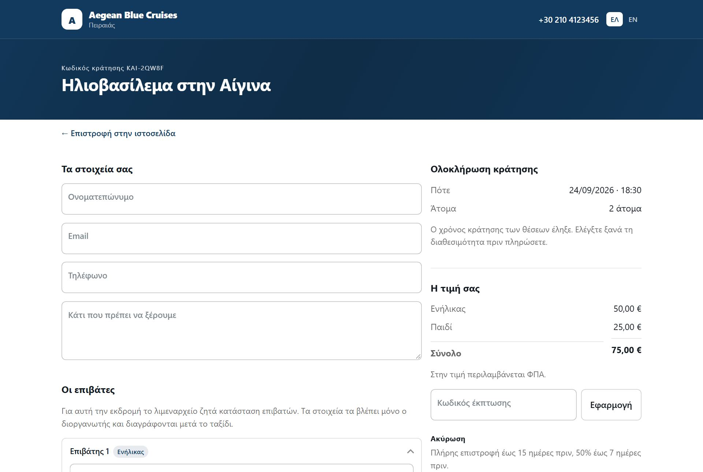
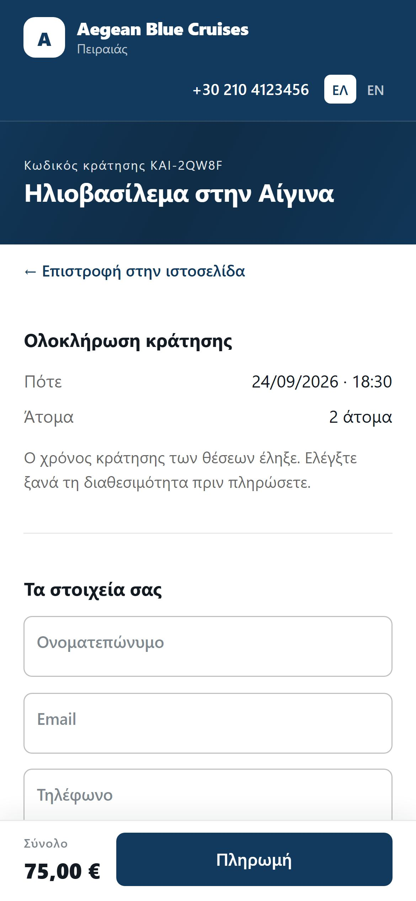
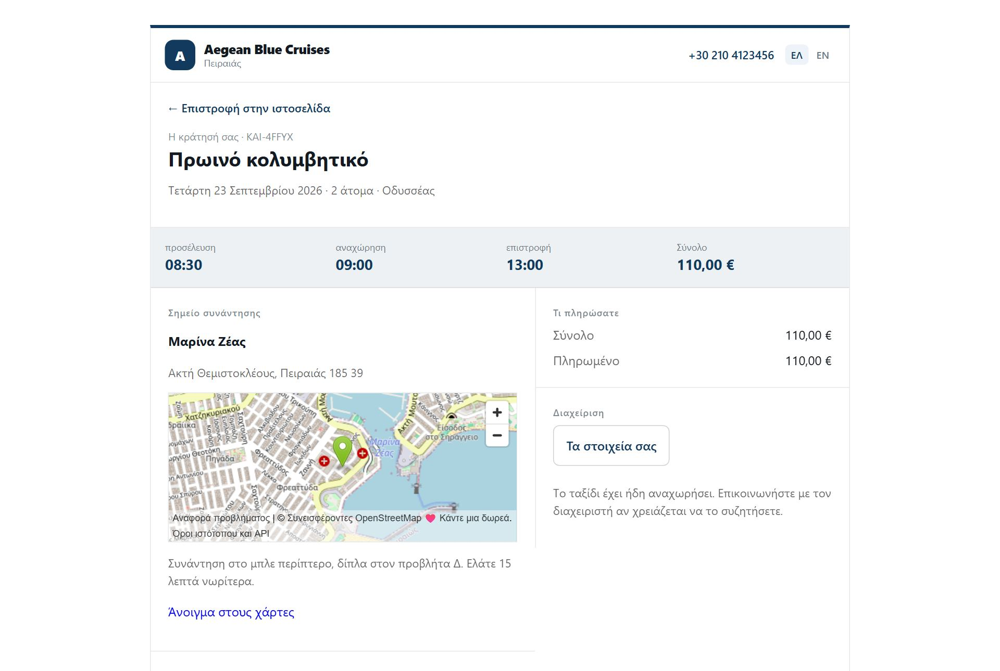
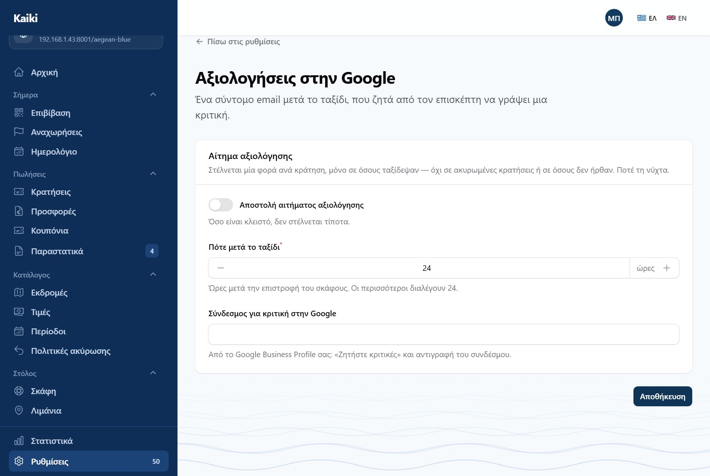
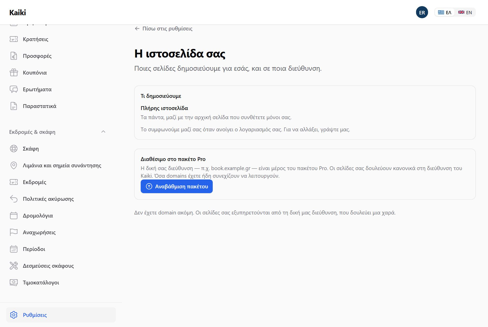

Το Kaiki φτιάχνει και συντηρεί μια δημόσια σελίδα για εσάς. Αν έχετε ήδη δική σας, μπορείτε να βάλετε μόνο τη φόρμα κράτησης μέσα της.
Ό,τι ορίζετε εδώ ισχύει και στη σελίδα σας και στη φόρμα κράτησης, όπου κι αν βρίσκεται αυτή — στη σελίδα ολοκλήρωσης της κράτησης, και στα email που φεύγουν στους πελάτες σας.
Υπάρχει πεδίο για δικό σας CSS. Καθαρίζεται πριν εφαρμοστεί και ισχύει μόνο στη σελίδα σας — ποτέ μέσα στη φόρμα κράτησης, γιατί εκείνη τρέχει και σε ξένα site και δεν πρέπει να μπορεί να σπάσει από αλλού.

Ο τίτλος και το κείμενο του hero, οι προβεβλημένες εκδρομές, το «ποιοι είμαστε» με φωτογραφία, οι κριτικές, ο καιρός, τα στοιχεία επικοινωνίας. Κάθε ενότητα μπορεί να κλείσει τελείως.
Η ενότητα της κορυφής δέχεται και βίντεο, με δύο τρόπους. Ή ανεβάζετε αρχείο — σύντομο, MP4 ή WebM, έως 20 MB — ή επικολλάτε σύνδεσμο YouTube ή Vimeo, τον απλό σύνδεσμο της γραμμής διευθύνσεων. Παίζει στο φόντο, χωρίς ήχο και σε επανάληψη, χωρίς χειριστήρια.
Η φωτογραφία μένει. Είναι αυτή που βλέπει ο επισκέπτης μέχρι να φορτώσει το βίντεο, εκεί όπου το YouTube δεν ανοίγει, και σε όποιον έχει ζητήσει από το κινητό του λιγότερη κίνηση. Αν βάλετε και αρχείο και σύνδεσμο, παίζει το αρχείο.
Η ενότητα «Εκδρομές» ανοίγει με μια σειρά προτεινόμενων που ο επισκέπτης μετακινεί με το δάχτυλο, και από κάτω όλες οι υπόλοιπες σε πλέγμα. Ο διακόπτης «Πρώτα μια σειρά με επιλεγμένες» την κλείνει: τότε όλες οι εκδρομές εμφανίζονται σε ένα πλέγμα — που διαβάζεται καλύτερα όταν οι εκδρομές είναι λίγες. Καμία εκδρομή δεν κρύβεται έτσι κι αλλιώς.
Αν την ανοίξετε, η σελίδα δείχνει πρόγνωση για το λιμάνι αναχώρησης. Από κάτω αναφέρεται από πού προέρχεται — γιατί μια πρόγνωση χωρίς πηγή είναι μια πρόγνωση που δεν ξέρει κανείς πόσο να εμπιστευτεί.

Αυτές, στις Ρυθμίσεις → Συχνές ερωτήσεις, αφορούν όλη την επιχείρηση και βγαίνουν σε κάθε εκδρομή. Όσες αφορούν μία μόνο εκδρομή τις γράφετε μέσα στην ίδια την εκδρομή, στην καρτέλα «Σελίδα» (Μέρος Β).


Δεν ρυθμίζεται και δεν συντηρείται: το τηλέφωνο, το email, η διεύθυνση και τα social διαβάζονται από τα στοιχεία της επιχείρησής σας — τα ίδια που δείχνει το υποσέλιδο και η αρχική. Αλλάζετε το τηλέφωνο μία φορά και αλλάζει παντού.
Ο σύνδεσμος υπάρχει στο μενού, στο υποσέλιδο, στο banner της αρχικής και μέσα σε κάθε εκδρομή, στο πλαίσιο «Έχετε απορίες;». Από εκεί το μήνυμα φτάνει με την εκδρομή δίπλα του, ώστε να μη διαβάζετε «είναι διαθέσιμη;» χωρίς να ξέρετε ποια.
Στα «Ερωτήματα», όχι στο email σας. Εκεί έχει κατάσταση — καινούριο, απαντήθηκε, έκλεισε — και κάποιον που το κλείνει. Ένα μήνυμα σε inbox είναι ένα μήνυμα που κανείς δεν μπορεί να πει αν απαντήθηκε.

Όλα όσα βλέπει εδώ ο επισκέπτης τα γράψατε στην εκδρομή: η καρτέλα «Σελίδα» δίνει τα κείμενα, τις φωτογραφίες, το πρόγραμμα και τις συχνές ερωτήσεις, η «Πότε φεύγει» τη διάρκεια και το λιμάνι, η «Τιμές» την τιμή και τα πρόσθετα. Ό,τι αφήσατε κενό δεν εμφανίζεται. Από τη λίστα Εκδρομές στον πίνακα, το «Δείτε τη σελίδα» ανοίγει ακριβώς αυτή τη σελίδα.

Εδώ καταλήγει ο επισκέπτης αφού διαλέξει ημέρα και άτομα. Η σελίδα φοράει τα δικά σας χρώματα και το λογότυπό σας, και η κεφαλίδα και το υποσέλιδο απλώνουν σε όλο το πλάτος.

Η κράτηση της επίδειξης είναι παλιά, γι' αυτό η σελίδα γράφει «Ο χρόνος κράτησης των θέσεων έληξε». Αυτό βλέπει όποιος αφήσει τη σελίδα ανοιχτή πάνω από λίγα λεπτά: ελέγχει ξανά τη διαθεσιμότητα πριν πληρώσει.

Ο επισκέπτης φτάνει εδώ από το email επιβεβαίωσης. Χωρίς κωδικό και χωρίς λογαριασμό: ο σύνδεσμος είναι το κλειδί.
Εισιτήριο και κωδικοί QR υπάρχουν μόνο όταν η κράτηση είναι επιβεβαιωμένη, έχει επιβιβαστεί ή έχει ολοκληρωθεί. Μια κράτηση που δεν πληρώθηκε, που έληξε ή που ακυρώθηκε δεν έχει εισιτήριο — ούτε κουμπί, ούτε αρχείο, ούτε από τη διεύθυνση. Οι κωδικοί QR και η προσθήκη στο ημερολόγιο φεύγουν επίσης από τη σελίδα μόλις περάσει η ώρα της εκδρομής· γι' αυτό δεν φαίνονται στην εικόνα, που είναι μιας εκδρομής που έχει ήδη φύγει.

Ανοίγετε τον διακόπτη, λέτε πόσες ώρες μετά την επιστροφή του σκάφους να φύγει το email (οι περισσότεροι διαλέγουν 24), και επικολλάτε τον σύνδεσμο «Ζητήστε κριτικές» από το Google Business Profile σας. Το email φεύγει μία φορά ανά κράτηση, μόνο σε όσους ταξίδεψαν — ποτέ σε ακυρωμένες κρατήσεις ή σε όσους δεν ήρθαν, και ποτέ τη νύχτα. Όσο ο διακόπτης είναι κλειστός, δεν στέλνεται τίποτα.

Τι δημοσιεύουμε. Είτε πλήρης ιστοσελίδα — τα πάντα, μαζί με την αρχική σελίδα που συνθέτετε — είτε μόνο σελίδες κρατήσεων: μία σελίδα ανά εκδρομή, η αναζήτηση και οι νομικές πληροφορίες, χωρίς αρχική, για όποιον έχει ήδη δική του ιστοσελίδα. Το συμφωνούμε μαζί σας όταν ανοίγει ο λογαριασμός· εδώ το βλέπετε, και για να αλλάξει μας γράφετε.
Δικό σας domain. Δηλώνετε ένα subdomain σας (π.χ.
book.example.gr), βάζετε την εγγραφή που σας δείχνει η οθόνη εκεί που
διαχειρίζεστε το DNS σας, και το Kaiki ελέγχει μόνο του πότε ενεργοποιήθηκε.
Μέχρι να επαληθευτεί, η σελίδα σας εξακολουθεί να δουλεύει στη διεύθυνση που έχει ήδη. Το πιστοποιητικό ασφαλείας εκδίδεται αυτόματα.
Το δικό σας domain είναι μέρος του πακέτου Pro. Στα άλλα πακέτα η οθόνη δείχνει τι περιλαμβάνει το Pro και ένα κουμπί αναβάθμισης, στη θέση της φόρμας. Οι σελίδες σας δουλεύουν κανονικά στη διεύθυνση του Kaiki.

Αν έχετε ήδη site — σε WordPress ή οπουδήποτε — δεν χρειάζεται να το αλλάξετε. Βάζετε τη φόρμα κράτησης μέσα του.
Το δημόσιο κλειδί φαίνεται στον κώδικα κάθε επισκέπτη και μόνο διαβάζει διαθεσιμότητα και τιμές. Το μυστικό κλειδί δεν μπαίνει ποτέ σε σελίδα — είναι για σύστημα που μιλά σε σύστημα, και εμφανίζεται μία μόνο φορά όταν το δημιουργείτε.